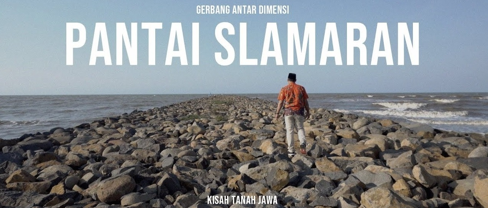
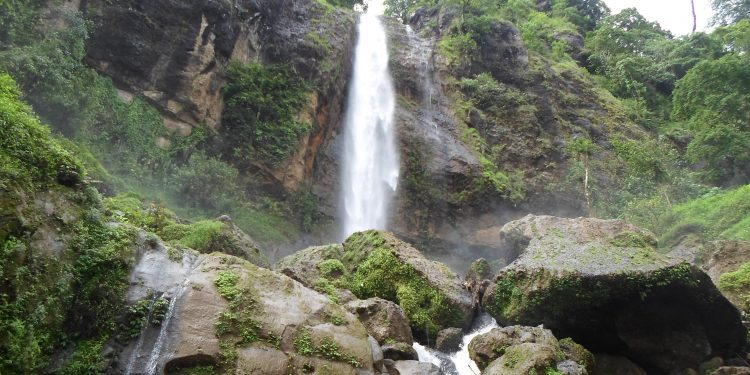
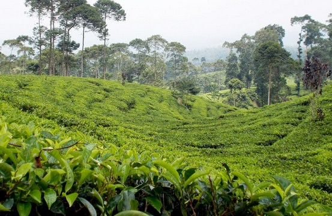

Berikut adalah beberapa wisata alam yang ada di kota Pekalongan yang akan
kami tampilkan pada artikel di bawah ini. Simak berita selengkapnya hanya di WWW.M3Bian.com
1. Pantai Indah Slamaran
WWWW.M3Bian.Com |
29 Agustus 2019 |
300 Comment

Pantai Slamaran merupakan nama sebuah pantai cantik yang berada di Pekalongan Utara
tepatnya di Desa Krapyak Lor, Kecamatan Pekalongan, Kabupaten Pekalongan, Provinsi Jawa
Tengah. Meski tergolong kecil (luasnya hanya sekita 3,5 Ha),Pantai Slamaran tetap ramai
didatangi
Pantai Slamaran merupakan tempat wisata yang harus anda kunjungi karena pesona
keindahannya tidak ada duanya. Penduduk lokal Desa Krapyak lor juga sangat ramah tamah
terhadap anda. Kota Pekalongan juga terkenal akan keindahan obyek wisatanya, salah
satunya adalah Pantai Slamaran di Krapyak lor Pekalongan Jawa Tengah ini. Pantai
Slamaran ini letaknya bersebelahan dengan pantai Pasir Kencana ,hanya saja di batasi
dengan pelabuhan perikanan Nusantara Kota Pekalongan. Layaknya tempat pariwisata yang
lain Pantai Slamaran memiliki keindahan dan pemandangan pantai yang sangat indah untuk
dipandang.
Saat berada disana maka anda akan merasakan kesejukan udara yang berhembus dari laut
lepas.Selain itu jika anda berkunjung saat sore hari maka anda akan menyaksikan
terbenamnya matahari dan jika datang pagi hari maka kita bisa menyaksikan matahari
terbit dari Pantai Slamaran ini. Luas Pantai Slamaran ini sekitar 3,5 hektar dan
memiliki garis pantai yang indah dan cocok untuk mencari ketenangan pikiran saat terjadi
kejenuhan. Pemandangan pada tepian Pantai Slamaran Indah Pekalongan, bukan berupa pantai
landai namun tembok beton memanjang dengan tumpukan batu penahan gempuran gelombang laut
di luarnya. Jika melihat tanggul itu, bagian dalam pantai sebenarnya sudah lebih rendah
dari ketinggian air laut.
Tanpa tanggul, air laut sudah akan masuk jauh ke daratan.Semakin sedikitnya area resapan
air, berubah menjadi lahan pertanian dan perkebunan, maupun permukiman dan lahan
industri membuat air banyak mengalir ke laut ketimbang tertahan di daratan. Mencairnya
es di benua Antartika dan di pegunungan, serta pemakaian air tanah berlebihan semakin
mengancam kehidupan di pantai dan bantaran sungai.
2. Wisata Air Terjun di Curug Muncar Pekalongan
WWW.M3Bian.Com
29 Agustus 2019
300 Comment

Gambar Wisata Air Terjun di Curug Muncar Pekalongan
wisata di pekalongan selanjutnya adalah curug muncar yang masih asri dan juga alami. Lokasi curug
muncar berada di ketinggian sekitar 1200 mdpl sehingga menciptakan udara sejuk khas pegunungan.
Lokasinya yang berada di hutan miliknya perhutani membuat perjlanan menuju curug ini di butuhkan
perjuangan yang sedikit berat dengan melewati lembah yang ketika musim hujan tiba jalan akan berubah
menjadi sangat licin.
Alamat curug muncar pekalongan : untuk lokasi curug muncar sendiri berada di Ds Curugmuncar, Kec
Petungkriyono, Pekalongan. Nama Curug muncar tidak hanya terdapat di peklaongan, di kabupaten
purowrejo dan temanggung pun mempunyai curug yang bernama curug muncar.
Tips Berwisata di Curug Muncar
Persiapkan kendaraan untuk menuju ke lokasi
Persiapkan kondisi fisik dan mental dengan baik
Persiapkan barang bawaan yang akan dibawa dan jangan berlebihan
Berhati hati untuk menuju lokasi
3. Wisata Kebun Teh Pagaliran di Pekalongan Jawa Tengah

Gambar Wisata Kebun Teh Pagaliran di Pekalongan Jawa Tengah
Wisata Kebun Teh Pagaliran di Pekalongan Jawa Tengah adalah salah satu tempat wisata yang berada di
kabupaten pekalongan, provinsi jawa tengah, negara indonesia. Wisata Kebun Teh Pagaliran di
Pekalongan Jawa Tengah adalah tempat wisata yang ramai dengan wisatawan pada hari biasa maupun hari
liburan. Tempat ini sangat indah dan bisa memberikan sensasi yang berbeda dengan aktivitas kita
sehari hari.
Dimana lokasi Wisata Kebun Teh Pagaliran di Pekalongan Jawa Tengah ? seperti yang tertulis di atas
lokasi Wisata Kebun Teh Pagaliran di Pekalongan Jawa Tengah terletak di Kecamatan pekalongan,
Kabupaten pekalongan, Provinsi jawa tengah. Tetapi jika anda masih bingung di mana lokasi atau letak
Wisata Kebun Teh Pagaliran di Pekalongan Jawa Tengah saya sarankan anda mencari dengan mengetik
Wisata Kebun Teh Pagaliran di Pekalongan Jawa Tengah di search google maps saja. Di Google maps
sudah tertandai dimana lokasi yang anda cari tersebut.
Wisata Kebun Teh Pagaliran di Pekalongan Jawa Tengah merupakan tempat wisata yang harus anda kunjungi
karena pesona keindahannya tidak ada duanya. Penduduk lokal daerah pekalongan juga sangat ramah
tamah terhadap wisatawan lokal maupun wisatawan asing.
Kota pekalongan juga terkenal akan keindahan obyek wisatanya , salah satu contohnya adalah Wisata
Kebun Teh Pagaliran di Pekalongan Jawa Tengah ini. Wisata Kebun Teh Pagaliran di Pekalongan Jawa
Tengah memiliki Pemandangan alam yang eksotik dengan hamparan kebun teh yang memesona di Pegunungan
Dieng bagian utara, dengan ketinggian 1.000-1.500 meter dari permukaan laut (dpl).
Wajar jika lingkungan sekitarnya menjadi sehat, alami, segar, serta jauh dari kebisingan dan polusi.
Dengan suhu 15-18 derajat Celcius pada malam hari, dan 21-25 derajat Celcius pada siang hari, setiap
pengunjung akan merasakan hawa sejuk yang menenteramkan batin dan pikiran wisatawan bisa melihat
langsung proses pembuatan teh, mulai dari pemetikan, pengolahan sampai pengepakan di pabrik.
Artinya, objek ini sekaligus bisa menjadi ajang pembelajaran bagi siapa saja yang ingin melihat dari
dekat proses industri teh, mulai dari hulu sampai hilir.para wisatawan juga dapat menikmati paket
tea walk bersama teman-teman dari satu instansi, sekolah, organisasi, atau perusahaan, sekaligus
berolahraga santai sambil menghirup udara sejuk dan segar.
Jalan-jalan mengitari kebun teh akan membawa kenangan yang sulit dilupakan.pengunjung juga bisa
menikmati momen matahari ketika sedang terbit atau ketika hendak tenggelam di ufuk barat.